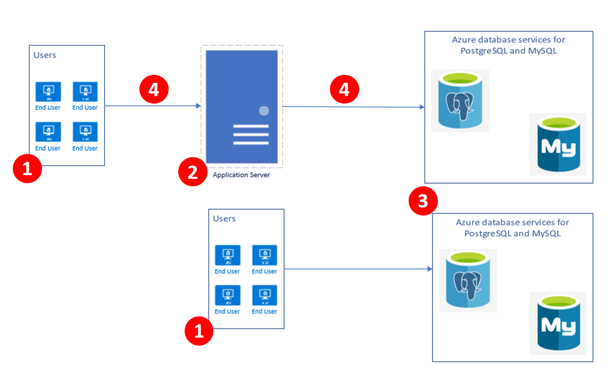
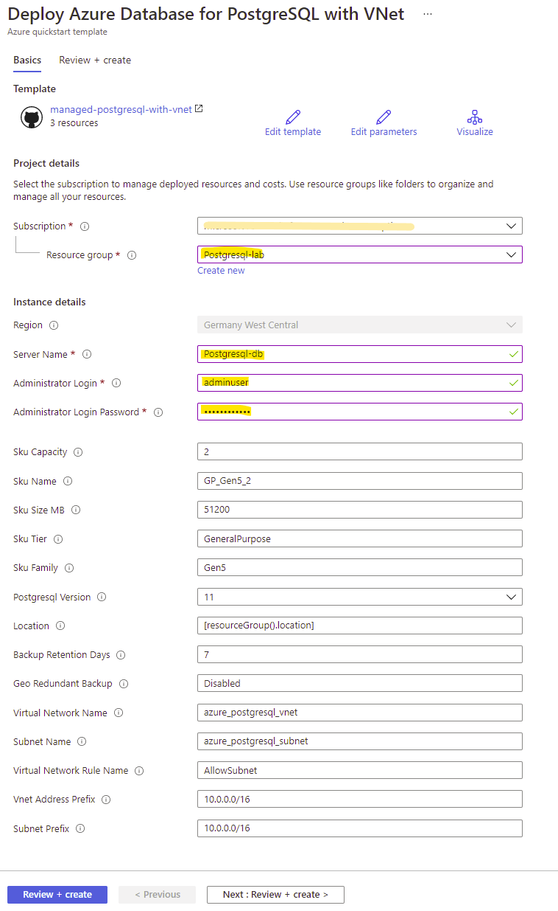
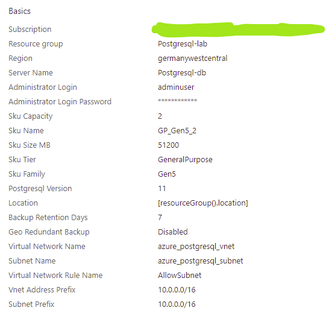
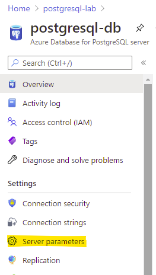
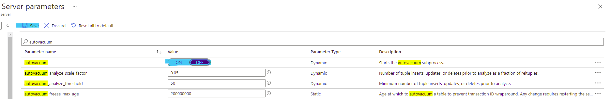
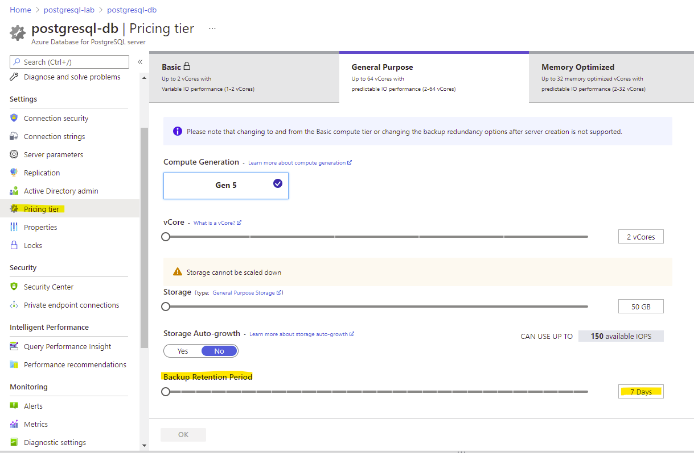
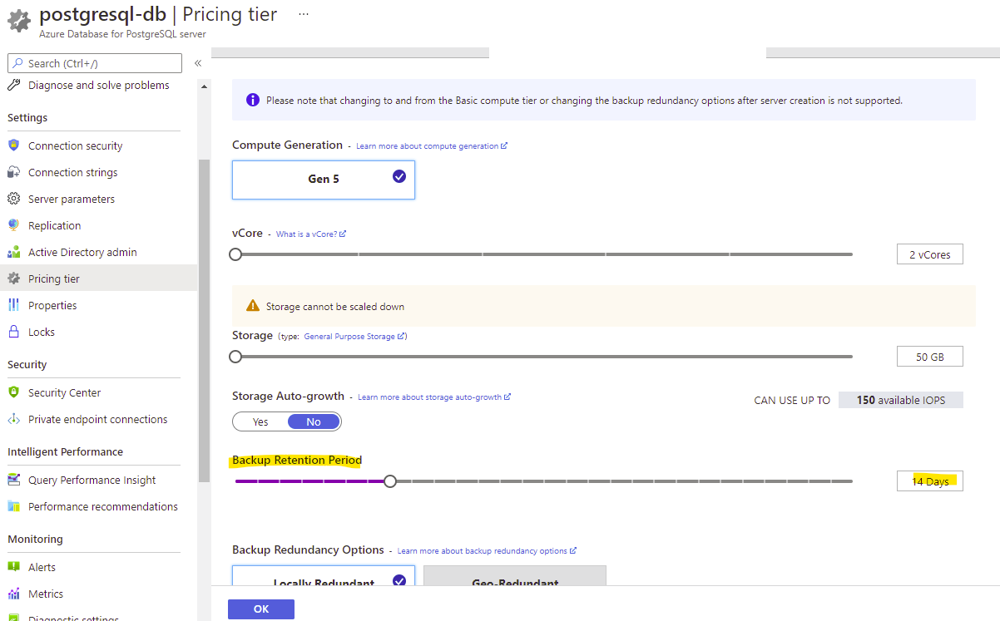
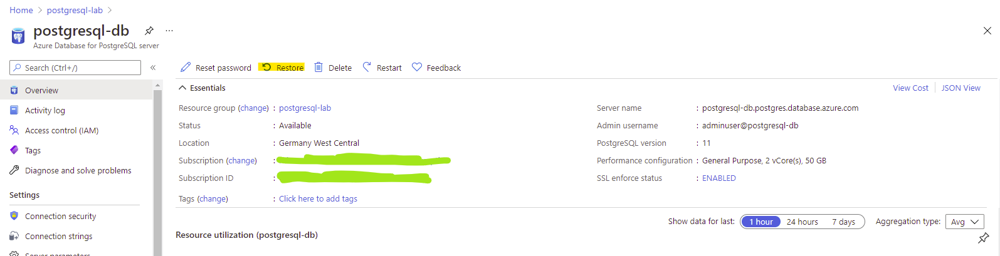
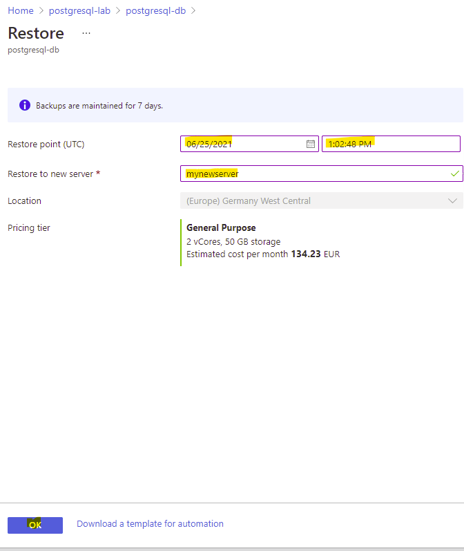

Kurs analityka danych od podstaw
Egzaminy, na które dostaniecie vouchery:
Po kliknięciu w powyższe linki na dole strony zobaczycie sekcję Two ways to prepare z linkami do portalu Microsoft Learn. Jest to kurs, który warto zrobić równolegle z naszym żeby oswoić się z pojęciami i słownictwem używanym podczas kursu a potem łatwiej zdać egzamin.
Prerekwizyty
Będziesz potrzebować bezpłatnego konta na Azure. Możesz je założyć tutaj.
Application Overview
You will be deploying the Apache Superset application which is fast, lightweight, intuitive, and loaded with options that make it easy for users of all skill sets to explore and visualize their data, from simple line charts to highly detailed geospatial charts.that is containerized and is architected for a microservice implementation.

Azure
Deploy Azure Database for PostgreSQL with Azure Portal
Azure Database for PostgreSQL is a fully-managed database as a service with built-in capabilities, such as high availability and intelligence.
Tasks
- Use Azure Resource Manager to deploy Azure Database for PostgreSQL - single server.
- Use Azure Cloud Shell to connected to the created database instance.
Setup Database
Deploy DB using ARM
Deploy Azure Database for PostgreSQL, which is managed service that you can use to run, manage, and scale in the cloud.
- If your environment meets the prerequisites and you’re familiar with using ARM templates, follow this link and a template will open in the Azure portal.

-
Continue to the next page by clicking Review + create
-
The review page should look like the following:

Connecting to PostgreSQL
In order to connect to a database you need to know the name of your target database, the host name and port number of the server, and what user name you want to connect as. psql can be told about those parameters via command line options, namely -d, -h, -p, and -U respectively. If an argument is found that does not belong to any option it will be interpreted as the database name (or the user name, if the database name is already given). Not all of these options are required; there are useful defaults. If you omit the host name, psql will connect via a Unix-domain socket to a server on the local host, or via TCP/IP to localhost on machines that don’t have Unix-domain sockets. The default port number is determined at compile time. Since the database server uses the same default, you will not have to specify the port in most cases. The default user name is your operating-system user name, as is the default database name. When the defaults aren’t quite right, you can save yourself some typing by setting the environment variables PGDATABASE, PGHOST, PGPORT and/or PGUSER to appropriate values. It is also convenient to have a ~/.pgpass file to avoid regularly having to type in passwords.
Basic psql options
-d dbname
--dbname=dbname
Specifies the name of the database to connect to. This is equivalent to specifying dbname as the first non-option argument on the command line.
-h hostname
--host=hostname
Specifies the host name of the machine on which the server is running.
-p port
--port=port
Specifies the TCP port or the local Unix-domain socket file extension on which the server is listening for connections. Defaults to the value of the PGPORT environment variable or, if not set, to the port specified at compile time, usually **5432**.
-U username
--username=username
Connect to the database as the user username instead of the default. (You must have permission to do so, of course.)
-W
--password
Force psql to prompt for a password before connecting to a database.
Using Azure Cloud Shell
Example (Please change these values to match with your setup)
psql -U adminuser@postgresql-db -h postgresql-db.postgres.database.azure.com postgres
Getting the connection string from Azure Portal
In this task, we will create a file in our Cloud Shell containing libpq environment variables that will be used to select default connection parameter values to PostgreSQL PaaS instance. These are useful to be able to connect to postgres in a fast and convenient way without hard-coding connection string.
Go to the “Connection Strings” tab on the left hand side of the Azure Portal and find psql connection string:
Open Cloud Shell and create a new .pg_azure file using your favourite editor (if you are not compfortable with Vim you can use VSCode):
vi .pg_azure
Add the following parameters:
export PGDATABASE=postgres
export PGHOST=HOSTNAME.postgres.database.azure.com
export PGUSER=your_user@hostname
export PGPASSWORD=your_password
export PGSSLMODE=require
You might use VSCode instead of *Vim**
wget https://storageaccounthol.z6.web.core.windows.net/scripts/pg_azure -O .pg_azure
code .pg_azure
Once the code pane opens, modify the paramerts to match with your setup, press “CTRL+s” to save the configuration file.
Read the content of the file in the current session:
source .pg_azure
If you closed this bash session, you won’t be able to login again to psql without reading .pg_azure.
Let’s connect to our Azure database with psql client:
psql

Task Hints You can also use the connection string shown in the Azure Portal in the Connection String tab. Using libpq variables is another option to ease your work with Postgres.
While you have the psql connected to the database, let’s run some quries:
SELECT version();
You should be able to read the PostgreSQL version.
Create table with some random data:
DROP TABLE IF EXISTS random_data;
CREATE TABLE random_data AS
SELECT s AS first_column,
md5(random()::TEXT) AS second_column,
md5((random()/2)::TEXT) AS third_column
FROM generate_series(1,500000) s;
Let’s select some of the records that we generated:
SELECT * FROM random_data LIMIT 10;
SELECT count(*) FROM random_data;
Multiversion Concurrency Control, MVCC
This section describes the behavior of the PostgreSQL database system when two or more sessions try to access the same data at the same time. The goals in that situation are to allow efficient access for all sessions while maintaining strict data integrity. Every developer of database applications and DBA should be familiar with the topics covered in this chapter.
Task Hints
- We will use the portal to change the PostgreSQL parameters.
- Inspect the table size and see the impact of autovacuum.
Tasks
Inspect and change server paramerters
You can list, show, and update configuration parameters for an Azure Database for PostgreSQL server through the Azure portal.
- Go to the Azure PostgreSQL resource

- Change Autovacuum server paramerter to off and Save

On psql or your faviourt IDE/GUI
- Check if Autovacuum settings
SHOW AUTOVACUUM ;
It should return this:
postgres=> SHOW AUTOVACUUM ;
autovacuum
------------
off
(1 row)
postgres=>
Make sure that you have the random_data table
drop TABLE IF EXISTS random_data;
CREATE TABLE random_data AS
SELECT s AS first_column,
md5(random()::TEXT) AS second_column,
md5((random()/2)::TEXT) AS third_column
FROM generate_series(1,500000) s;
In case you wanted to see the path of the table:
SELECT pg_relation_filepath('random_data');
Output
pg_relation_filepath
----------------------
base/14417/16507
(1 row)
postgres=>
Output
postgres=> SELECT pg_relation_filepath('random_data');
pg_relation_filepath
----------------------
base/14417/16507
(1 row)
- Display the table size:
SELECT pg_relation_size('random_data');
Output
postgres=> SELECT pg_relation_size('random_data');
pg_relation_size
------------------
50569216
(1 row)
- Display the table size in MB:
SELECT pg_size_pretty(pg_relation_size('random_data'));
Output
postgres=> SELECT pg_size_pretty(pg_relation_size('random_data'));
pg_size_pretty
----------------
48 MB
(1 row)
postgres=>
Inserting more records in the random_data
INSERT INTO random_data
SELECT s,
md5(random() :: TEXT),
md5((random() / 2) :: TEXT)
FROM generate_series(1, 1000000) s;
SELECT count(*) FROM random_data;
Output
postgres=> INSERT INTO random_data
postgres-> SELECT s,
postgres-> md5(random() :: TEXT),
postgres-> md5((random() / 2) :: TEXT)
postgres-> FROM generate_series(1, 1000000) s;
INSERT 0 1000000
postgres=>
postgres=> SELECT count(*) FROM random_data;
count
---------
1500000
(1 row)
Check the table size after the insersion
SELECT pg_size_pretty(pg_relation_size('random_data'));
Output
postgres=> SELECT pg_size_pretty(pg_relation_size('random_data'));
pg_size_pretty
----------------
145 MB
(1 row)
postgres=>
Notice, that there is a signigcant increase in the table size. Now, delete all the recrods:
DELETE from random_data;
Output
postgres=> DELETE from random_data;
DELETE 1500000
Checking the table size after deletion of the records:
SELECT pg_size_pretty(pg_relation_size('random_data'));
Output
postgres=> SELECT pg_size_pretty(pg_relation_size('random_data'));
pg_size_pretty
----------------
145 MB
(1 row)
You can see that the table size is still 145 MB, if we started the VACUUM process things would change:
VACUUM VERBOSE random_data;
Output
postgres=> VACUUM VERBOSE random_data;
INFO: vacuuming "public.random_data"
INFO: "random_data": removed 1500000 row versions in 18519 pages
INFO: "random_data": found 1500000 removable, 0 nonremovable row versions in 18519 out of 18519 pages
DETAIL: 0 dead row versions cannot be removed yet, oldest xmin: 595
There were 0 unused item pointers.
Skipped 0 pages due to buffer pins, 0 frozen pages.
0 pages are entirely empty.
CPU: user: 0.25 s, system: 0.00 s, elapsed: 0.23 s.
INFO: "random_data": truncated 18519 to 0 pages
DETAIL: CPU: user: 0.06 s, system: 0.01 s, elapsed: 0.04 s
INFO: vacuuming "pg_toast.pg_toast_16507"
INFO: index "pg_toast_16507_index" now contains 0 row versions in 1 pages
DETAIL: 0 index row versions were removed.
0 index pages have been deleted, 0 are currently reusable.
CPU: user: 0.00 s, system: 0.00 s, elapsed: 0.00 s.
INFO: "pg_toast_16507": found 0 removable, 0 nonremovable row versions in 0 out of 0 pages
DETAIL: 0 dead row versions cannot be removed yet, oldest xmin: 596
There were 0 unused item pointers.
Skipped 0 pages due to buffer pins, 0 frozen pages.
0 pages are entirely empty.
CPU: user: 0.00 s, system: 0.00 s, elapsed: 0.00 s.
VACUUM
postgres=> SELECT pg_size_pretty(pg_relation_size('random_data'));
pg_size_pretty
----------------
0 bytes
(1 row)
- Check the table size after applying the Vacuum process:
SELECT pg_size_pretty(pg_relation_size('random_data'));
Output
postgres=> SELECT pg_size_pretty(pg_relation_size('random_data'));
pg_size_pretty
----------------
0 bytes
(1 row)
psql — PostgreSQL interactive terminal
psql is a terminal-based front-end to PostgreSQL. It enables you to type in queries interactively, issue them to PostgreSQL, and see the query results. Alternatively, input can be from a file or from command line arguments. In addition, psql provides a number of meta-commands and various shell-like features to facilitate writing scripts and automating a wide variety of tasks. Anything you enter in psql that begins with an unquoted backslash (\) is a psql meta-command that is processed by psql itself. These commands make psql more useful for administration or scripting. Meta-commands are often called slash or backslash commands. The format of a psql command is the backslash, followed immediately by a command verb, then any arguments. The arguments are separated from the command verb and each other by any number of whitespace characters.
List the databases in the cluster:
postgres=> \l
List the databases in the cluster with their sizes:
postgres=> \l+
Copy and paste following statements:
CREATE DATABASE quiz;
\connect quiz
CREATE TABLE public.answers (
question_id serial NOT NULL,
answer text NOT NULL,
is_correct boolean NOT NULL DEFAULT FALSE
);
CREATE TABLE public.questions (
question_id integer NOT NULL,
question text NOT NULL
);
ALTER TABLE ONLY public.answers
ADD CONSTRAINT answers_pkey PRIMARY KEY (question_id, answer);
ALTER TABLE ONLY public.questions
ADD CONSTRAINT questions_pkey PRIMARY KEY (question_id);
ALTER TABLE ONLY public.answers
ADD CONSTRAINT question_id_answers_fk FOREIGN KEY (question_id) REFERENCES public.questions(question_id);
CREATE SCHEMA calc;
CREATE OR REPLACE FUNCTION calc.increment(i integer) RETURNS integer AS $$
BEGIN
RETURN i + 1;
END;
$$ LANGUAGE plpgsql;
CREATE VIEW calc.vista AS SELECT $$I'm in calc$$;
CREATE VIEW public.vista AS SELECT $$I'm in public$$;
INSERT INTO public.questions (question_id, question) VALUES (1, 'Jaki symbol chemiczny ma tlen?');
INSERT INTO public.answers (question_id, answer, is_correct) VALUES (1, 'Au', false);
INSERT INTO public.answers (question_id, answer, is_correct) VALUES (1, 'O', true);
INSERT INTO public.answers (question_id, answer, is_correct) VALUES (1, 'Oxy', false);
INSERT INTO public.answers (question_id, answer, is_correct) VALUES (1, 'Tl', false);
List the databases in the cluster:
postgres=> \l
Lists schemas (namespaces) in the current database:
quiz=> \dn
List of schemas
Name | Owner
--------+----------------
calc | gustaw
public | azure_pg_admin
(2 rows)
Check your current connection:
quiz=> \conninfo
You are connected to database "quiz" as user "gustaw" on host "demo.postgres.database.azure.com" (address "20.67.160.95") at port "5432".
SSL connection (protocol: TLSv1.3, cipher: TLS_AES_256_GCM_SHA384, bits: 256, compression: off)
Check what’s going on on your database:
quiz=> TABLE pg_stat_activity;
It’s unreadable, isn’t it? Change the display format:
quiz=> \x auto
And try to display the same view again:
quiz=> SELECT * FROM pg_stat_activity;
Display all relations (including tables, views, materialized views, indexes, sequences, or foreign tables) in your database:
quiz=> \d
List of relations
Schema | Name | Type | Owner
--------+-------------------------+----------+----------
public | answers | table | postgres
public | answers_question_id_seq | sequence | postgres
public | questions | table | postgres
public | vista | view | postgres
(4 rows)
Display all relations with their size and description:
quiz=> \d+
List of relations
Schema | Name | Type | Owner | Size | Description
--------+-------------------------+----------+----------+------------+-------------
public | answers | table | postgres | 16 kB |
public | answers_question_id_seq | sequence | postgres | 8192 bytes |
public | questions | table | postgres | 16 kB |
public | vista | view | postgres | 0 bytes |
(4 rows)
Display information about one, specific table:
quiz=> \dt+ pg_class
Display tables, which names start with “pg_c[…]”
quiz=> \dt pg_c*
Check out help information:
quiz=> \?
Display the number of total connections to your database:
quiz=> SELECT count(*) FROM pg_stat_activity;
Watch the change of the number over time:
quiz=> \watch
Stop the process:
quiz=> [Ctrl+c]
List all system views:
quiz=> \dvS
Turns displaying of how long each SQL statement takes on:
quiz=> \timing
List the system functions:
quiz=> \dfS
Fetch and display the definition of the chosen function, in the form of a CREATE OR REPLACE FUNCTION command:
quiz=> \sf abs(bigint)
Print psql’s command line history:
quiz=> \s
Search for a specific command in the history:
quiz=> [Ctrl+r + part of the command string]
Roles and Permissions
Connect to the PostgreSQL instance
[postgres@localhost ~]$ psql
psql (11.5)
Type "help" for help.
postgres=>
Create new group
postgres=> CREATE GROUP monty_python;
Create a new user Graham that belongs to monty_python group and doesn’t inherit any privileges from the group. Allow the user to have maximum 2 active connection.
postgres=> CREATE USER Graham CONNECTION LIMIT 2 IN ROLE monty_python NOINHERIT;
Create a new user Eric that belongs to monty_python group and inherits privileges from the group. Allow the user to have maximum 2 active connection.
postgres=> CREATE USER Eric CONNECTION LIMIT 2 IN ROLE monty_python INHERIT;
Display all the roles available in the cluster
postgres=> \dg
List of roles
Role name | Attributes | Member of
----------------+------------------------------------------------------------+----------------
eric | 2 connections | {monty_python}
graham | No inheritance +| {monty_python}
| 2 connections |
monty_python | Cannot login | {}
postgres | Superuser, Create role, Create DB, Replication, Bypass RLS | {}
Connect to the quiz database
postgres=> \c quiz
Grant all privileges for all tables in schema public to group monty_python
quiz=> GRANT ALL ON ALL TABLES IN SCHEMA public TO monty_python;
GRANT
In order to be able to switch to another role you need to grant this permission to the current user:
GRANT graham to adminuser;
GRANT graham to adminuser;
Switch to the Graham user
quiz=> SET ROLE TO graham;
SET
Try to check the content of answers table as user Graham
quiz=> TABLE answers;
ERROR: permission denied for table answers
Change the user and try to query the table again
quiz=> SET ROLE TO eric;
SET
quiz=> table answers;
question_id | answer | is_correct
-------------+--------+------------
1 | Au | f
1 | O | t
1 | Oxy | f
1 | Tl | f
(4 rows)
Why user Graham doesn’t have permission to view the content of answer table?
Changing permissions
Grant the SELECT privilege on table answers to user Graham.
quiz=> GRANT SELECT ON TABLE answers TO Graham;
WARNING: no privileges were granted for "answers"
GRANT
Switch back to the superuser account and try again.
quiz=> SET ROLE TO adminuser;
SET
quiz=> GRANT SELECT ON TABLE answers TO Graham;
GRANT
Check if user Graham is able to query the table.
quiz=> SET ROLE TO graham;
SET
quiz=> TABLE answers;
question_id | answer | is_correct
-------------+--------+------------
1 | Au | f
1 | O | t
1 | Oxy | f
1 | Tl | f
(4 rows)
Display all granted privileges.
quiz=> \dp
Access privileges
Schema | Name | Type | Access privileges | Column privileges | Policies
--------+-----------+-------+-------------------------------+-------------------+----------
public | answers | table | postgres=arwdDxt/postgres +| |
| | | monty_python=arwdDxt/postgres+| |
| | | graham=r/postgres | |
public | questions | table | postgres=arwdDxt/postgres +| |
| | | monty_python=arwdDxt/postgres | |
(2 rows)
Granting roles As user Graham try to DELETE all records from table answers.
quiz=> DELETE FROM answers ;
ERROR: permission denied for table answers
As adminuser copy all privileges from user eric to user graham.
quiz=> \c
You are now connected to database "quiz" as user "postgres".
quiz=> GRANT eric TO graham ;
GRANT ROLE
As user Graham try to DELETE all records from table answers.
quiz=> set role to graham;
SET
quiz=> DELETE FROM answers ;
ERROR: permission denied for table answers
quiz=> SET ROLE TO adminuser;
quiz=> GRANT DELETE ON TABLE answers TO graham;
GRANT
quiz=> SET role TO Graham;
SET
quiz=> DELETE FROM answers ;
Display permissions granted to objects and information about roles.
quiz=> \dp
Access privileges
Schema | Name | Type | Access privileges | Column privileges | Policies
--------+-----------+-------+-------------------------------+-------------------+---------
-
public | answers | table | postgres=arwdDxt/postgres +| |
| | | monty_python=arwdDxt/postgres+| |
| | | graham=r/postgres +| |
| | | eric=d/postgres | |
public | questions | table | postgres=arwdDxt/postgres +| |
| | | monty_python=arwdDxt/postgres | |
(2 rows)
quiz=> \dg
List of roles
Role name | Attributes | Member of
----------------+------------------------------------------------------------+---------------------
eric | 2 connections | {monty_python}
graham | No inheritance +| {monty_python,eric}
| 2 connections |
monty_python | Cannot login | {}
postgres | Superuser, Create role, Create DB, Replication, Bypass RLS | {}
Without INHERIT, membership in another role only grants the ability to SET ROLE to that other role; the privileges of the other role are only available after having done so.
Revoke DELETE privilege from eric.
quiz=> \c
You are now connected to database "quiz" as user "adminuser".
quiz=> REVOKE DELETE ON TABLE answers FROM eric;
REVOKE
quiz=> set role to eric;
SET
quiz=> delete from answers ;
DELETE 0
As you see user Eric is still able to perform DELETE operation because of his membership in role monty_python.
Logical Backup
Plain pg_dump
Make sure you have sourced the file with libpq variables on your current session:
source .pg_azure
pg_dump like other native postgres utilities is able to use them to connect to your database instance.
Run pg_dump:
pg_dump
Run pg_dump against quiz database:
pg_dump quiz
You can redirect the output of pg_dump to another program:
pg_dump quiz|less
Save the output of pg_dump:
pg_dump quiz > /tmp/quiz.plain.dump
Check the content of file:
less /tmp/quiz.plain.dump
Dump only the schema (without any data):
pg_dump --schema-only quiz > /tmp/quiz_ddl.plain.dump
Check the content of file:
less /tmp/quiz_ddl.plain.dump
You don’t have to each time specify the database name, you can for instance overwrite PGDATABASE variable just for this session:
export PGDATABASE=quiz
Let’s dump only the data:
pg_dump --data-only > /tmp/quiz_data.plain.dump
Check the content of file:
less /tmp/quiz_data.plain.dump
Change the COPY command to INSERT:
pg_dump --data-only --inserts > /tmp/quiz_data_insert.plain.dump
Check the content of file:
less /tmp/quiz_data_insert.plain.dump
Dump only one table:
pg_dump --table=answers > /tmp/answers.plain.dump
Check the content of file:
less /tmp/answers.plain.dump
Check all the options for pg_dump:
pg_dump --help
Restore from plain dump
Drop database quiz:
dropdb quiz
Recreate it:
createdb quiz
Restore it from your dump:
psql -f /tmp/quiz.plain.dump
Watch out for errors! You might want to redirect errors to a separate file:
psql -f /tmp/quiz.plain.dump 2> errors.txt
less errors.txt
Log in to psql and check if everything was properly restored.
Directory format
Create dump using directory format. That is the only format where you can many parallel jobs to dump your database.
pg_dump quiz -Fd -f /tmp/directorydump
Check the content of files in the directory:
zless /tmp/directorydump/*dat.gz
Restore from directory format dump
Drop database quiz:
dropdb quiz
Recreate it:
createdb quiz
Restore it from your dump:
pg_restore -d quiz /tmp/directorydump
Log in to psql and check if everything was properly restored.
Global objects dump
Dump logically the whole instance:
pg_dumpall > /tmp/whole_cluster.plain.dump
less /tmp/whole_cluster.plain.dump
Dump only the global objects:
pg_dumpall -g > /tmp/globals.plain.dump
less /tmp/globals.plain.dump
SQL Characteristic
Partial Index
Let’s create a new table in quiz database and load it with some data:
CREATE SCHEMA IF NOT EXISTS games;
SET SEARCH_PATH TO games;
DROP TABLE IF EXISTS games;
CREATE TABLE games
(
id BIGINT PRIMARY KEY GENERATED BY DEFAULT AS IDENTITY,
start_time TIMESTAMP NOT NULL DEFAULT now(),
end_time TIMESTAMP NOT NULL,
players INTEGER[] NOT NULL,
winner INTEGER,
is_activ BOOLEAN DEFAULT TRUE
);
INSERT INTO games (start_time, end_time, players, winner, is_activ)
SELECT d, d + '1 hour', ('{' || n || ',' || n + 4 || '}')::INT[], n, TRUE
FROM generate_series(1, 10000) n,
generate_series('2021-01-01'::TIMESTAMP, now()::TIMESTAMP, '1 day'::INTERVAL) d
;
Check how many rows were added:
SELECT count(*) FROM games;
Update some of the rows so is_activ field will have value FALSE for all the rows where start_time is different than today:
UPDATE games SET is_activ = FALSE WHERE start_time::date <> CURRENT_DATE;
Check how many of the rows have flag is_activ set to TRUE:
SELECT count(*) FROM games WHERE is_activ;
Run the same query 4-5 times again and check it’s execution time:
SELECT count(*) FROM games WHERE is_activ;
Were subsequent executions faster than the first and could you explain why?
Let’s create a partial index using is_activ column:
CREATE INDEX ON games(id) WHERE is_activ;
Check again how much time this query needs to be executed:
SELECT count(*) FROM games WHERE is_activ;
JSONB
Create a table containing JSONB column and populate it with some data:
CREATE TABLE products
(
name TEXT,
attributes JSONB
);
INSERT INTO products (name, attributes)
VALUES ('Leffe Blonde Ale',
'{
"category": "Golden / Blonde Ale",
"region": "Belgium",
"ABV": 6.6
}');
Query the table using JSON operators:
SELECT name, attributes -> 'ABV'
FROM products;
SELECT name, attributes ->> 'ABV'
FROM products
WHERE attributes ->> 'region' = 'Belgium';
Create the GIN index on the table:
CREATE INDEX ON products USING gin(attributes);
Physical Backup and Point in Time Restore
Backup
While creating a server through the Azure portal, the Pricing Tier window is where you select either Locally Redundant or Geographically Redundant backups for your server. This window is also where you select the Backup Retention Period - how long (in number of days) you want the server backups stored for.

The backup retention period governs how far back in time a point-in-time restore can be retrieved, since it’s based on backups available. Point-in-time restore is described further in the following section.

Point-in-time restore
Azure Database for PostgreSQL allows you to restore the server back to a point-in-time and into to a new copy of the server. You can use this new server to recover your data, or have your client applications point to this new server.
For example, if a table was accidentally dropped at noon today, you could restore to the time just before noon and retrieve the missing table and data from that new copy of the server. Point-in-time restore is at the server level, not at the database level.
The following steps restore the sample server to a point-in-time:
-
In the Azure portal, select your Azure Database for PostgreSQL server.
-
In the toolbar of the server’s Overview page, select Restore.


The new server created by point-in-time restore has the same server admin login name and password that was valid for the existing server at the point-in-time chose. You can change the password from the new server’s Overview page.
The new server created during a restore does not have the firewall rules or VNet service endpoints that existed on the original server. These rules need to be set up separately for this new server.
Statistics and Query Planning
EXPLAIN
Recreate the random_data table:
DROP TABLE IF EXISTS random_data;
CREATE TABLE random_data
AS
SELECT s AS first_column,
md5(random() :: TEXT) AS second_column,
md5((random() / 2) :: TEXT) AS third_column
FROM generate_series(1, 500000) s;
Run EXPLAIN command to see what’s the execution plan of ‘SELECT *’ query:
EXPLAIN TABLE random_data;
Output:
Seq Scan on random_data (cost=0.00..11420.05 rows=524705 width=68)
Check the statistics that Postgres currently has for random_data table:
SELECT relpages, reltuples FROM pg_class WHERE relname = 'random_data';
Output:
relpages | reltuples
----------+-----------
0 | 0
(1 row)
Run the VACUUM ANALYZE command against random_data and check the statisctics again:
VACUUM ANALYSE random_data;
SELECT relpages, reltuples FROM pg_class WHERE relname = 'random_data';
Output:
relpages | reltuples
----------+-----------
6173 | 500000
(1 row)
Check the EXPLAIN output again:
EXPLAIN TABLE random_data;
Are the numbers more accurate?
Output:
QUERY PLAN
---------------------------------------------------------------------
Seq Scan on random_data (cost=0.00..11173.00 rows=500000 width=70)
(1 row)
Let’s calculate the cost as Postgres query planner does:
SELECT relpages * current_setting('seq_page_cost')::numeric
+ reltuples * current_setting('cpu_tuple_cost')::numeric
FROM pg_class
WHERE relname = 'random_data';
Output:
?column?
----------
11173
(1 row)
As you can see that’s the same cost as shown in the EXPLAIN output;
Let’s add a WHERE condition to the query:
EXPLAIN SELECT * FROM random_data WHERE first_column < 2000;
Output:
Gather (cost=1000.00..9971.17 rows=1940 width=70)
Workers Planned: 2
-> Parallel Seq Scan on random_data (cost=0.00..8777.17 rows=808 width=70)
Filter: (first_column < 2000)
Let’s add ANALYZE to EXPLAIN clause:
EXPLAIN ANALYSE SELECT * FROM random_data WHERE first_column < 2000;
Output:
Gather (cost=1000.00..9971.17 rows=1940 width=70) (actual time=0.498..727.918 rows=1999 loops=1)
Workers Planned: 2
Workers Launched: 2
-> Parallel Seq Scan on random_data (cost=0.00..8777.17 rows=808 width=70) (actual time=0.004..83.350 rows=666 loops=3)
Filter: (first_column < 2000)
Rows Removed by Filter: 166000
Planning Time: 0.098 ms
Execution Time: 728.032 ms
Now not only the plan was shown but also the query was executed.
Create an index and see how the execution plan has changed:
CREATE INDEX ON random_data(first_column);
EXPLAIN ANALYZE SELECT * FROM random_data WHERE first_column < 2000;
Output:
Index Scan using random_data_first_column_idx on random_data (cost=0.42..86.67 rows=1957 width=70) (actual time=0.012..0.330 rows=1999 loops=1)
Index Cond: (first_column < 2000)
Planning Time: 0.107 ms
Execution Time: 0.421 ms
Why Index Scan not Index Only Scan was used?
See the execution plan for a selfjoin:
EXPLAIN ANALYZE
SELECT t5.*
FROM random_data
JOIN random_data t5 USING (first_column)
WHERE t5.first_column < 2000;
Output:
Nested Loop (cost=0.84..5543.32 rows=1957 width=70) (actual time=0.025..3.809 rows=1999 loops=1)
-> Index Scan using random_data_first_column_idx on random_data t5 (cost=0.42..86.67 rows=1957 width=70) (actual time=0.016..0.422 rows=1999 loops=1)
Index Cond: (first_column < 2000)
-> Index Only Scan using random_data_first_column_idx on random_data (cost=0.42..2.78 rows=1 width=4) (actual time=0.001..0.001 rows=1 loops=1999)
Index Cond: (first_column = t5.first_column)
Heap Fetches: 0
Planning Time: 0.331 ms
Execution Time: 3.928 ms
Why Nested Loop was used?
Check if planner has chosen the right plan by disabling the nested loop:
SET ENABLE_NESTLOOP TO OFF;
EXPLAIN ANALYZE
SELECT t5.*
FROM random_data
JOIN random_data t5 USING (first_column)
WHERE t5.first_column < 2000;
Output:
Gather (cost=1111.13..10352.56 rows=1957 width=70) (actual time=0.965..114.698 rows=1999 loops=1)
Workers Planned: 2
Workers Launched: 2
-> Hash Join (cost=111.13..9156.86 rows=815 width=70) (actual time=35.316..67.464 rows=666 loops=3)
Hash Cond: (random_data.first_column = t5.first_column)
-> Parallel Seq Scan on random_data (cost=0.00..8256.33 rows=208333 width=4) (actual time=0.011..38.918 rows=166667 loops=3)
-> Hash (cost=86.67..86.67 rows=1957 width=70) (actual time=0.786..0.787 rows=1999 loops=3)
Buckets: 2048 Batches: 1 Memory Usage: 216kB
-> Index Scan using random_data_first_column_idx on random_data t5 (cost=0.42..86.67 rows=1957 width=70) (actual time=0.038..0.442 rows=1999 loops=3)
Index Cond: (first_column < 2000)
Planning Time: 0.219 ms
Execution Time: 114.823 ms
Disable also Hash Joins:
SET ENABLE_HASHJOIN TO OFF;
EXPLAIN ANALYZE
SELECT t5.*
FROM random_data
JOIN random_data t5 USING (first_column)
WHERE t5.first_column < 2000;
Output:
Gather (cost=1000.85..11896.00 rows=1957 width=70) (actual time=0.446..287.762 rows=1999 loops=1)
Workers Planned: 2
Workers Launched: 2
-> Merge Join (cost=0.84..10700.30 rows=815 width=70) (actual time=13.313..16.500 rows=666 loops=3)
Merge Cond: (random_data.first_column = t5.first_column)
-> Parallel Index Only Scan using random_data_first_column_idx on random_data (cost=0.42..10079.76 rows=208333 width=4) (actual time=12.803..12.873 rows=667 loops=3)
Heap Fetches: 0
-> Index Scan using random_data_first_column_idx on random_data t5 (cost=0.42..86.67 rows=1957 width=70) (actual time=0.085..0.552 rows=1999 loops=3)
Index Cond: (first_column < 2000)
Planning Time: 0.255 ms
Execution Time: 287.901 ms
Which algorithm was the fastest for this query and why?
work_mem Setting
Run EXPLAIN command to see what’s the execution plan of the SELECT query that requires sorting:
EXPLAIN ANALYSE SELECT second_column FROM random_data ORDER BY 1 DESC;
Output:
Sort (cost=73824.53..75136.30 rows=524705 width=32) (actual time=10705.361..14201.555 rows=500000 loops=1)
Sort Key: second_column DESC
Sort Method: external merge Disk: 21096kB
-> Seq Scan on random_data (cost=0.00..11420.05 rows=524705 width=32) (actual time=0.018..808.240 rows=500000 loops=1)
Planning Time: 0.087 ms
Execution Time: 14378.488 ms
As you see external merge was used as a sort method. It means that your data were sorted on the disk. This is because work_mem value was to small to sort the data in memory.
Check the current value of work_mem:
SHOW work_mem;
How much memory do you need to sort the data in RAM?
You can change the work_mem value just for the session to try it out. Set the proper value and try to rerun the query.
SET work_mem = '10MB';
After chosing the right work_mem value you will see that execution plan has changed:
Sort (cost=61270.03..62581.80 rows=524705 width=32) (actual time=11884.004..12146.057 rows=500000 loops=1)
Sort Key: second_column DESC
Sort Method: quicksort Memory: 51351kB
-> Seq Scan on random_data (cost=0.00..11420.05 rows=524705 width=32) (actual time=0.013..579.455 rows=500000 loops=1)
Planning Time: 0.051 ms
Execution Time: 12206.274 ms
Now quicksort Memory was used instead of external merge. Why more memory is needed for the same sort operation in memory than on the disk?